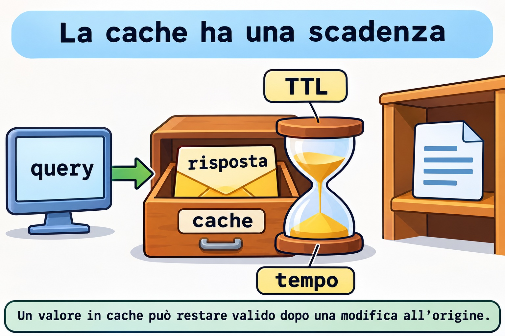

Lezione 19.2 · DNS ricorsivo e diagnosi
Il cuore di questa lezione: distingui autorità, ricorsione e cache senza aprire un resolver a qualunque origine.
| Scheda | Piano di lavoro |
|---|---|
| Modulo | M19 · Servizi di rete, lezione 2 di 9 |
| Quando | Settimana 25 |
| Alla fine | distingui autorità, ricorsione e cache senza aprire un resolver a qualunque origine. |
| Prerequisiti | M17, M18; VM 201 e 202; utente student; rete isolata vmbr17 |
| Durata | 80–110 minuti |
| Snapshot | m19a2-inicio e m19a2-fim; solo VM indicate |
Il nodo Proxmox riceve solo i comandi indicati come host.
Gli altri appartengono alla VM specificata, con Bash e utente student.
Non eseguire i blocchi successivi se una verifica fallisce.
Conserva l’output reale nel diario; questa lezione non presenta un’esecuzione già effettuata.
Prima del lab, completa la guida del banco M19.
Il profilo isolato della VM 202 si chiama m19-isolada, con indirizzo .202/24; la VM 204 conserva ifupdown della 19.1.
Nomi canonici del modulo: il nome della VM in Proxmox e l’hostname del sistema operativo devono corrispondere al ruolo, prima di eseguire le guardie. Un nome DNS di servizio non cambia l’hostname. Se l’inventario differisce, riconcilialo dalla console prima di proseguire; non ignorare le guardie.
| VM | Hostname breve | Indirizzo isolato |
|---|---|---|
| 201 | rocky-lab | 192.0.2.201 |
| 202 | debian-lab | 192.0.2.202 |
| 204 | srv-deb | 192.0.2.204 |
| 212 | m19-client | DHCP; solo sfida 19.9 |
I messaggi di priming osservati durante la fase autoritativa con recursion no non sostituiscono la verifica delle risposte. Dopo aver attivato la ricorsione, errori persistenti richiedono di controllare inoltro, rete e ACL; non considerarli automaticamente innocui.
1 · Riscaldamento
- Qual è la differenza fra AA e RA in una risposta DNS?
- Il TTL di una risposta nella cache deve seguire immediatamente una modifica all’origine?
- Quale server hai interrogato nell’ultima diagnosi DNS?
Disegna client, resolver e autorità.
Aggiungi il percorso di uscita della VM 204 tramite la gestione, senza trasformarla in router dei client.
2 · Perché conta
Il servizio risponde per la zona locale, ma il client chiede anche nomi esterni.
Serve un ruolo aggiuntivo: cercare una risposta per conto del client e mantenere una cache.
Una query esterna può fallire per rotta, firewall, forwarder, DNSSEC, orologio o delega.
Riavviare il DNS senza distinguere queste cause fa perdere riscontri.
Ponte Windows
Svuotare la cache di un client non svuota quella del server.
Identifica il livello prima di chiedere una pulizia o annunciare che il problema è risolto.
3 · Modello mentale

L’autorità conosce la propria zona; il ricorsore cerca risposte di altre zone.
Lo stesso processo BIND può svolgere entrambi i ruoli con controlli distinti.
RD è la richiesta di ricorsione inviata dal client.
RA annuncia la disponibilità della ricorsione; AA caratterizza una risposta autoritativa.
Questi segnali rispondono a domande diverse.


TTL è il tempo di conservazione di un record nella cache.
Non misura la latenza, non garantisce aggiornamenti istantanei e non sostituisce il seriale della zona.
Rocky × Debian
BIND resta nella VM 204 Debian; puoi ripetere le query esplicite dalla VM 201 Rocky.
Confronta le risposte dello stesso server prima di confrontare i resolver locali delle distribuzioni.
4 · L'essenziale
| Riscontro | Domanda a cui risponde |
|---|---|
| SERVER | Chi ha ricevuto questa query? |
| AA | La risposta viene da un’autorità per la domanda? |
| RA | Il server annuncia ricorsione disponibile? |
| NXDOMAIN | Il nome interrogato non esiste? |
| SERVFAIL | Il server non è riuscito a concludere? |
| timeout | È arrivata una risposta entro il limite? |
| TTL | Per quanto tempo il record può restare nella cache? |
Non copiare un resolver pubblico come forwarder per abitudine.
Usa solo indirizzi reali autorizzati della gestione e verifica la raggiungibilità dalla VM 204.
Un forwarder evita query iterative dirette quando la rete limita l’uscita.
Se fallisce, la politica scelta definisce se esiste un altro tentativo.
Decidi 1
A locale funziona e i nomi esterni danno SERVFAIL.
Quale verifica restringe meglio il problema?
A. Cambiare l’indirizzo di gestione della VM 202.
B. Interrogare direttamente il forwarder reale dalla VM 204.
C. Disattivare DNSSEC e firewall insieme.
5 · Lab guidato
Passo 1 · Registrare la base e l’uscita autorizzata
Ipotesi: Il client isolato ha bisogno di un gateway per interrogare la VM 204?
Sull’host, conserva lo stato iniziale con qm snapshot 204 m19a2-inicio.
Nella VM 204, registra interfacce, rotta di gestione e configurazione attuale prima di modificare.
ip -br address
ip -4 route
cat /etc/resolv.conf
sudo named-checkconf
dig @192.0.2.204 app.lab.test A +norecurse
sudo test ! -e /etc/bind/named.conf.options.m19a2-before || exit 1
sudo cp -a /etc/bind/named.conf.options /etc/bind/named.conf.options.m19a2-beforeLeggi il DNS reale configurato nella gestione.
Se resolv.conf mostra uno stub di loopback, identifica il server a monte tramite il gestore effettivamente installato e la documentazione della rete.
Non usare BIND come forwarder di se stesso.
read -r -p "IPv4 do DNS real autorizado da gestao: " UPSTREAM_DNS
python3 - "$UPSTREAM_DNS" <<'PY'
import ipaddress,sys
a=ipaddress.IPv4Address(sys.argv[1])
assert not (a.is_loopback or a.is_unspecified or a.is_multicast)
assert a not in ipaddress.IPv4Network("192.0.2.0/24")
PY
test "$?" -eq 0 || exit 1
ip -4 route get "$UPSTREAM_DNS"
dig @"$UPSTREAM_DNS" www.debian.org A +time=3 +tries=1
dig @"$UPSTREAM_DNS" www.debian.org A +tcp +time=3 +tries=1Output atteso: La VM 204 raggiunge il DNS autorizzato tramite la gestione con UDP e TCP. Il client resta senza gateway sulla scheda isolata.
Verifica: Fermati se il DNS autorizzato non risponde. Correggi l’uscita della VM 204 prima di abilitare il servizio ricorsivo.
Passo 2 · Attivare la ricorsione solo per l’ACL
Ipotesi: Limitare chi esegue query richiede anche di limitare l’accesso alla cache?
Questa variante usa forward only per rendere esplicita la dipendenza dal forwarder.
Non ci saranno tentativi iterativi diretti se fallisce.
[[ "$UPSTREAM_DNS" =~ ^[0-9.]+$ ]] || exit 1
sudo tee /etc/bind/named.conf.options >/dev/null <<EOF
acl m19_trusted { 127.0.0.1; 192.0.2.0/24; };
options {
directory "/var/cache/bind";
listen-on { 127.0.0.1; 192.0.2.204; };
listen-on-v6 { none; };
allow-query { m19_trusted; };
allow-transfer { none; };
recursion yes;
allow-recursion { m19_trusted; };
allow-query-cache { m19_trusted; };
forward only;
forwarders { $UPSTREAM_DNS; };
dnssec-validation auto;
};
EOF
sudo named-checkconf && sudo rndc reconfig
sudo systemctl is-active named
sudo ss -lntup | grep ":53"
sudo journalctl -u named -b --no-pager -n 30Se la validazione fallisce, ripristina il file precedente e valida prima di ricaricare.
Non lasciare un tentativo non valido come configurazione di avvio.
Output atteso: Autorità locale conservata, ricorsione e cache limitate all’ACL; BIND resta fuori dall’indirizzo di gestione.
Verifica: Leggi le tre direttive ACL. Un semplice recursion yes non è una politica completa per un server accessibile dai client.
Passo 3 · Distinguere risposta locale ed esterna
Ipotesi: Un nome esterno restituito dal ricorsore deve avere AA?
Nella VM 202, mantieni il profilo isolato m19-isolada e usa l’indirizzo esplicito.
Non modificare resolver globale o profilo di gestione.
dig @192.0.2.204 app.lab.test A +norecurse
dig @192.0.2.204 www.debian.org A
dig @192.0.2.204 lab.test MX +norecurse
dig @192.0.2.204 -x 192.0.2.204 +norecurseOutput atteso: La zona locale conserva AA; una risposta esterna riuscita annuncia la ricorsione disponibile e normalmente non ha AA. Leggi status e sezione SERVER.
Verifica: Se compare SERVFAIL, confronta con la query diretta al forwarder nella VM 204. Se compare timeout, controlla prima percorso, socket e firewall.
Un NXDOMAIN esterno può essere una risposta negativa valida.
Non trattare ogni risultato senza indirizzo come errore di trasporto.
Passo 4 · Osservare la cache senza inventare tempi
Ipotesi: La seconda query sarà sempre più veloce, con TTL esattamente inferiore?
date -Is
dig @192.0.2.204 www.debian.org A +noall +answer +stats
sleep 2
date -Is
dig @192.0.2.204 www.debian.org A +noall +answer +statsRegistra RRset, TTL, server e tempo osservato.
In una cache stabile il TTL residuo tende a diminuire; prefetch, scadenza, risposte variabili e cache del forwarder possono cambiare l’osservazione.
Interrogare la propria zona autoritativa non è un esperimento sul TTL della cache ricorsiva.
Il valore mostrato può essere il TTL originale del record locale.
sudo rndc flushname www.debian.org
dig @127.0.0.1 www.debian.org A +noall +answer +stats
sudo rndc statusIl comando di pulizia si esegue nella VM 204 e riguarda solo quel nome nel BIND locale.
Non svuota il forwarder né il client.
Output atteso: Ottieni riscontri confrontabili, senza una latenza promessa. La cache a monte può continuare a rispondere dopo la pulizia locale.
Verifica: Annota esplicitamente ciò che la verifica non dimostra: non dimostra che tutti i livelli siano stati svuotati.
Passo 5 · Seguire le deleghe sul percorso corretto
Ipotesi: +trace usa necessariamente lo stesso percorso del forwarder configurato in BIND?

dig +trace debian.org A
dig @192.0.2.204 debian.org A
ip -4 route
timedatectl statusEsegui il trace nella VM 204, la cui gestione ha l’uscita autorizzata.
Esegue query iterative proprie dopo la scoperta iniziale; non riproduce la catena di inoltro del servizio.
Una rete che consente DNS solo al forwarder può bloccare il trace e consentire comunque il ricorsore configurato.
Registra questo limite invece di cambiare firewall per ottenere un bel disegno.
Confronta delega, server interrogato e risultato finale.
Per SERVFAIL con DNSSEC, esamina anche ora e log; non disattivare la validazione senza riscontri della causa.
Output atteso: Trace e query ricorsiva sono esperimenti diversi; uno può funzionare quando l’altro è bloccato dalla politica di uscita.
Verifica: Disegna i due percorsi e identifica quale processo apre le query esterne in ciascun caso.
Decidi 2
Il trace fallisce, ma la query tramite BIND e forwarder funziona.
Quale conclusione è giustificata?
A. I percorsi hanno permessi diversi; non c’è ancora prova di un guasto BIND.
B. Il client deve ricevere il gateway della VM 204.
C. Tutto il DNS esterno è guasto.
Passo 6 · Verificare limiti e persistenza
Ipotesi: La ricorsione per il lab richiede ascolto sull’indirizzo di gestione?
Nella VM 204 leggi configurazione effettiva e socket.
Non esporre temporaneamente il servizio sulla gestione per produrre una verifica negativa.
sudo named-checkconf -p | grep -A 6 -E "allow-query|allow-recursion|allow-query-cache|listen-on"
sudo ss -lntup | grep ":53"
sudo sysctl net.ipv4.ip_forward
ip -4 routeLa VM 204 deve restare senza inoltro di pacchetti fra schede.
La ricorsione DNS è una conversazione del processo server, non NAT del traffico dei client.
Reboot di verifica: Con console disponibile, riavvia solo 204. Riapri la gestione e ripeti A locale, nome esterno e socket.
sudo systemctl rebootDopo l’avvio nella VM 204 e la query esterna nella VM 202:
sudo systemctl is-active named
dig @192.0.2.204 app.lab.test A +norecurse
dig @192.0.2.204 www.debian.org AOutput atteso: Entrambi i ruoli persistono, con ambito limitato. Il percorso reale della gestione resta documentato nel diario.
Verifica: Sull’host, esegui qm snapshot 204 m19a2-fim dopo le verifiche. Conserva la configurazione per DHCP, posta e web.
6 · Rompi e ripara
Guasto 1 · Forwarder irraggiungibile
Sintomo: A locale risponde; la query esterna fallisce.
Indagine: Nella VM 204 confronta ip -4 route e query dirette al forwarder con UDP e TCP.
Causa: L’uscita autorizzata o il DNS a monte fallisce; forward only non tenta un altro percorso di risoluzione.
Riparazione: Ripristina la connettività autorizzata; conserva ACL e validazione.
Verifica: Verifica prima il forwarder, poi BIND, infine il client.
Prevenzione: Registra quale dipendenza esiste fuori dalla zona locale.
Guasto 2 · Client che interroga un altro DNS
Sintomo: Il browser fallisce, ma dig @192.0.2.204 app.lab.test A funziona.
Indagine: Confronta server esplicito, risoluzione di sistema ed eventuali impostazioni proprie dell’applicazione.
Causa: L’applicazione o il sistema usa un altro percorso di risoluzione.
Riparazione: Correggi solo il livello identificato con una modifica autorizzata; non cambiare la gestione nell’esercizio.
Verifica: Ripeti esattamente la query che falliva, sullo stesso percorso.
Prevenzione: Annota sempre server e strumento usati.
Guasto 3 · Cache che non segue la modifica
Sintomo: Un altro resolver restituisce ancora il valore precedente dopo la modifica dell’autorità.
Indagine: Confronta autorità, seriale, TTL residuo e server che conserva la risposta.
Causa: Una copia valida resta nella cache fino alla scadenza, oppure esiste un altro livello.
Riparazione: Conferma l’origine e attendi il TTL osservato; svuota solo la cache autorizzata e identificata.
Verifica: La query successiva converge verso l’origine senza interrompere la gestione.
Prevenzione: Pianifica TTL prima delle migrazioni e conserva riscontri della versione precedente.
7 · Trappole
Prima di accusare il servizio, verifica VM, interfaccia e rete.
Una risposta corretta di un altro server resta la verifica sbagliata.
Un file accettato dal validatore non dimostra che il processo lo abbia caricato.
Controlla anche stato, socket e risposta del client.
Gli indirizzi di documentazione usati qui appartengono solo al segmento segregato.
Se si sovrappongono a gestione, VPN o rotte esistenti, fermati.
8 · Quiz
- AA e RA dimostrano la stessa cosa?
- Qual è la differenza fra SERVFAIL e timeout?
- Svuotare BIND svuota il forwarder?
- Perché il trace può fallire quando la ricorsione funziona?
- Che cosa impedisce la ricorsione aperta in questo lab?
Rispondi prima di aprire le soluzioni.
Per ogni risposta, indica un’osservazione capace di smentirla.
9 · Promemoria
dig @192.0.2.204 app.lab.test A +norecurse
dig @192.0.2.204 www.debian.org A
sudo rndc status
sudo journalctl -u named -b --no-pager -n 30Flashcard: Qual è l’oggetto? Chi risponde? Quale osservazione distingue configurazione e risultato?
!explica
!feynman
!quiz
10 · Checklist e chiusura
- [ ] Autorità e ricorsione distinte tramite query e flag.
- [ ] Forwarder reale autorizzato registrato e verificato.
- [ ] Nessun socket DNS sulla gestione, NAT o gateway isolato.
- [ ] TTL osservato con limiti documentati.
- [ ] Il reboot ha conservato configurazione e risposte.
Ultimo esercizio: Rifai il disegno iniziale usando solo riscontri registrati nel lab. Segna ciò che non hai ancora dimostrato.
Lo snapshot finale registra una fase coerente; non sostituisce il backup indipendente.
Non eliminare la VM 204 né la rete isolata: servono alle prossime lezioni.
11 · Nella vita reale
Missione di sola lettura: in un ambiente autorizzato, identifica server interrogato, interfaccia usata e responsabile della configurazione.
Non modificare profili, porte, lease o zone.
Consegna tre riscontri con ora e contesto, un’ipotesi e un limite.
Rimuovi i dati privati prima di condividere il rapporto.
12 · Approfondire quando vuoi
BIND: dig e strumenti diagnostici
Usa la documentazione della versione installata.
Controlla il manuale locale prima di adattare un’opzione di un’altra versione.
Soluzioni commentate
Riscaldamento: AA indica autorità; RA annuncia ricorsione.
TTL può conservare una risposta precedente.
Senza registrare il server manca contesto alla diagnosi.
Decidi 1: B.
La query diretta distingue dipendenza esterna e BIND.
Decidi 2: A.
Trace e inoltro aprono conversazioni diverse, soggette a politiche diverse.
Quiz 1: no; autorità e ricorsione sono proprietà distinte.
Quiz 2: SERVFAIL è una risposta di errore; timeout indica assenza di risposta entro il limite.
Quiz 3: no; le cache sono indipendenti.
Quiz 4: trace può interrogare direttamente autorità bloccate dall’uscita consentita solo al forwarder.
Quiz 5: ACL di query, ricorsione e cache; socket limitati; segmentazione e politica firewall coerenti.